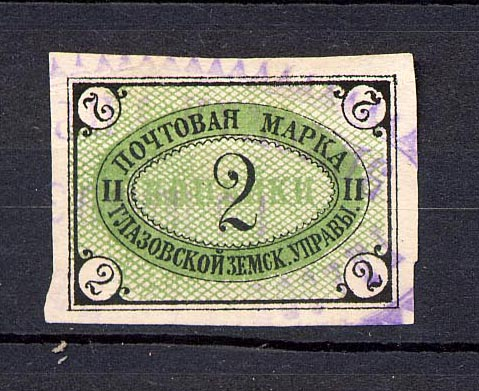
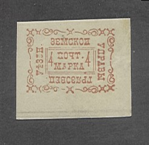
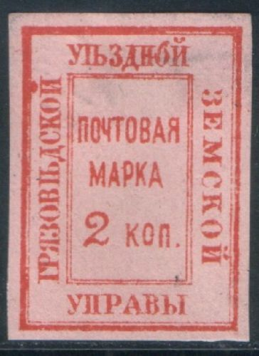
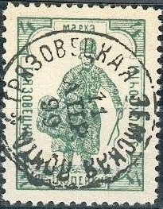

Return To Catalogue - Go to Zemstvos overview - Russia
Note: on my website many of the
pictures can not be seen! They are of course present in the
catalogue;
contact me if you want to purchase it.
1868 Text, large stamps, many types
2 k black and green (1888) 3 k black and green Surcharged (1887) 2 k on 3 k black and green
1898 Arms
(Reduced size)

2 k blue
I have seen a mecical revenue stamp in red in a similar design (10 k red).
I have also seen a so-called 'Hialeah' forgery, a 2 k violet(!) 'misprint'. These forgeries were made quite recently with a computer scanner and printer. Large numbers of these forgeries were offered at Ebay.
1878 Arms and text in a circle
2 k blue
1880 Text, different types



(Reduced size, image obtained from a Cherrystone auction)
2 k red 4 k red (1881) 4 k violet (1884) 4 k blue (1887, with ornaments in corners) 4 k black (1889, with ornaments around the design) 4 k blue (1889) 4 k brown (1889) 4 k red (1889) 4 k yellow (1889) 4 k green (1889) 4 k lilac (1889)

Forgery of the 2 k stamp.
1891 Arms, imperforated


4 k blue 4 k yellow 4 k violet 4 k green 4 k red
1893 Number

4 k violet 4 k blue 4 k red 4 k green (1894) 4 k brown (1894) 4 k lilac (1894)
1893 Text
4 k violet 4 k blue 4 k red 4 k green (1894) 4 k brown (1894) 4 k lilac (1894)
1894 Arms

4 k green 4 k brown 4 k lilac 4 k blue 4 k red
1894
4 k green 4 k brown 4 k lilac 4 k blue 4 k red
1894 Postman

4 k green 4 k brown 4 k lilac 4 k blue 4 k red
1894 Text
4 k green 4 k brown 4 k lilac 4 k blue 4 k red
1897 Letter


1 k black and orange (1898) 1 k black and blue (1905, exists imperforated) 1 k black and green (1906) 4 k black and red 4 k black and blue 4 k black and brown 4 k black and lilac 4 k black and green 4 k black and red
1897
4 k black and lilac 4 k black and blue 4 k black and brown 4 k black and red
1897 Arms
4 k black and red 4 k black and brown 4 k black and violet 4 k black and green
1897 Arms, slightly changed design
4 k red 4 k brown 4 k violet 4 k green
1899 As Bavaria stamp

4 k black, red and green
1899 Arms
(Reduced size)
Arms with posthorn 1 k brown 1 k brown and grey 3 k blue 4 k black and grey 4 k green 4 k orange and yellow 5 k violet 7 k green
1899 As Swiss stamps
4 k black, red and brown (sitting Helvetia) 4 k black, yellow and green (standing Helvetia)
1899 Arms, various types

4 k black, red and blue 4 k black, red and blue 4 k black, yellow and green
1903 Arms, new type

2 k brown 2 k brown (smaller size) 2 k blue (smaller size) 2 k green 4 k blue 6 k red


{kind=link}
{kind=link}
{kind=link}